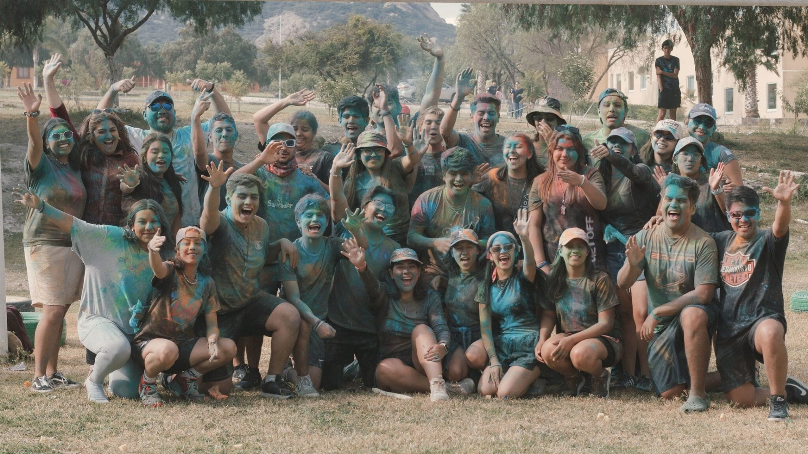
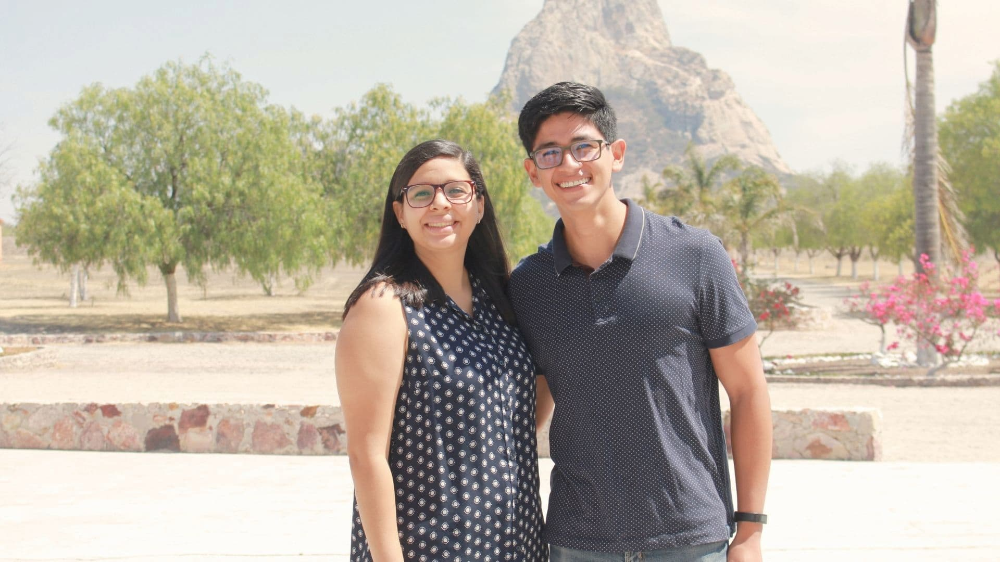
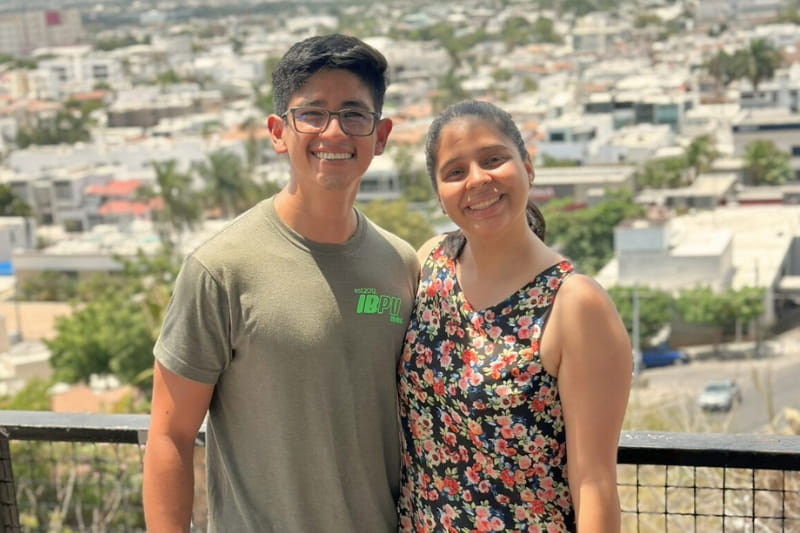

Nuestra Aventura en Julio y Agosto.
Te compartimos un vistazo personal a nuestra aventura de fe en México. Descubre lo que Dios ha estado haciendo en...
Leer más
Creemos que la fe es una aventura que se vive mejor en compañía. Te invitamos a caminar con nosotros mientras exploramos lo que el Señor nos va enseñando.

Somos Ernesto y Diana, una pareja apasionada por vivir aventuras y servir al Señor. Nos casamos en 2021 y desde entonces hemos estado viviendo esta aventura. Actualmente, estamos en el Instituto Bíblico de Palabra de Vida en México, una experiencia que nos ha desafiado y transformado. Nos encanta compartir nuestra fe una forma es a traves nuestro compartir, servir a las personas y a la niñez en diferentes proyectos, mientras caminamos juntos hacia lo que Dios tiene preparado.
Desde pequeño, mi vida religiosa parecía un camino recto. Pero en 2008, entendí que no se trataba de ser perfecto, sino de ser salvo. Fue un giro de 180 grados que me hizo comprender mi condición de pecador y el regalo de la cruz. El camino ha sido una aventura, llena de aprendizaje y crecimiento.
Descubre másA los 8 años, entendí que Jesús era el único camino al cielo. Años después, me di cuenta de que buscaba mi propia gloria y decidí poner a Cristo en primer lugar. Fue como empezar de nuevo, con más fuerza y propósito. Cada paso ha reafirmado que esta es la decisión más importante de mi vida.
Descubre más¿Quieres ser parte de nuestra aventura?
Te compartimos los últimos pasos de nuestra aventura. Descubre lo que hemos estado haciendo durante nuestros estudios y servicio, y acompáñanos en oración.

Te compartimos un vistazo personal a nuestra aventura de fe en México. Descubre lo que Dios ha estado haciendo en...
Leer másLa fe es una aventura en compañía. Te invitamos a unirte a la nuestra y ser parte de nuestra historia. Aquí te compartimos las iniciativas en las que puedes acompañarnos, ya sea con tu oración o tu apoyo.
Estamos preparando proyectos emocionantes. ¡Pronto compartiremos más!
En nuestra aventura, hemos encontrado herramientas increíbles que nos ayudan a crecer en nuestra fe y a compartirla con otros. Aquí te compartimos algunos de nuestros recursos favoritos, desde apps de devocionales hasta herramientas evangelísticas que nos han sido de gran ayuda. Si tienes sugerencias, nos encantaría conocerlas.
Estamos compilando los mejores recursos. ¡Vuelve pronto!
Estamos aquí para escucharte y apoyarte en lo que necesites, en esta aventura en compañía. Ya sea para una oración, una pregunta o simplemente para saludar, estamos a un clic de distancia.